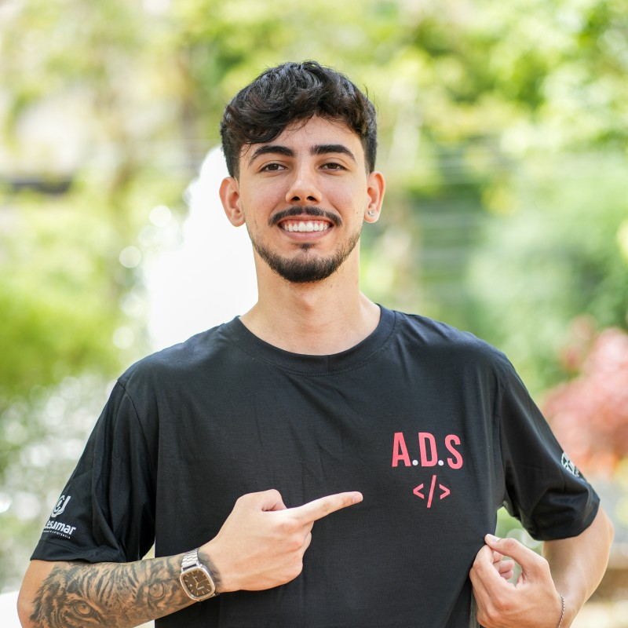
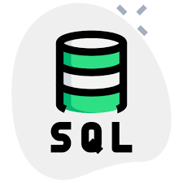
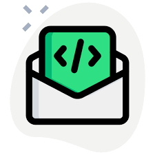
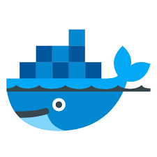

Guilherme Tesch
Auxiliar de infraestrutura - TI
Cloud Engineer
Arquiteto de Nuvem

Profissional com uma trajetória de +2 anos nas áreas de Suporte a Usuário e Telecomunicações, onde desenvolvi uma visão analítica e especializações técnicas. Minha base técnica é complementada por conhecimentos em Redes, Programação Orientada a Objetos com Java, administração de bancos de dados e manutenção de infraestruturas de telefonia IP com Asterisk. Paralelamente às atividades profissionais, invisto no aprimoramento contínuo em redes, com foco nos objetivos das certificações CCNA e AWS Cloud Practioner, além de explorar tecnologias em ambiente Linux e projetos práticos de Active Directory. Sou movido pelo desafio de garantir alta disponibilidade e escalabilidade tecnológica, utilizando uma comunicação assertiva e atenção aos detalhes para elevar a performance das equipes e a eficiência dos serviços entregues.
*Atuação estratégica no atendimento de segundo nível em ambiente de Call Center, com foco na resolução de incidentes complexos e na manutenção da alta disponibilidade operacional. Responsável por diagnósticos avançados de hardware e software, garantindo que as ferramentas críticas de negócio operem com máxima eficiência sob métricas rigorosas de SLA. Principais responsabilidades: Diagnóstico e Resolução Avançada: Realização de análises técnicas detalhadas para identificação da causa raiz de falhas em sistemas e hardware, utilizando ferramentas avançadas e execução de scripts específicos para correção de problemas. Gestão de Chamados (SLA): Monitoramento e atendimento de demandas via GLPI, assegurando o cumprimento dos prazos estabelecidos e a qualidade técnica nas soluções entregues ao time de operações. Suporte a Sistemas Críticos: Suporte especializado em ferramentas essenciais de Call Center, incluindo softwares de CRM, plataformas de gerenciamento de chamadas e sistemas de telefonia IP. Administração de Sistemas: Reconfiguração de ambientes, ajustes finos em softwares e implementação de comandos técnicos para otimização da performance das estações de trabalho e servidores. Documentação e Base de Conhecimento: Manutenção de registros minuciosos de diagnósticos e ações tomadas, contribuindo para a base de conhecimento técnica e facilitando a resolução de incidentes futuros. Melhoria de Processos: Elaboração de relatórios sobre problemas recorrentes e proposição de melhorias estruturais para reduzir a incidência de falhas e elevar a estabilidade do ecossistema tecnológico.
Atuação estratégica em ambiente de Call Center de alta criticidade, com foco em garantir a estabilidade e a continuidade dos serviços de telecomunicação interna e externa. Responsável pelo suporte técnico especializado e pela manutenção da infraestrutura de telefonia, assegurando a máxima disponibilidade das operações de comunicação da empresa. Principais responsabilidades: Infraestrutura de Voz: Suporte e manutenção preventiva e corretiva em servidores de telefonia IP (Asterisk), garantindo o correto funcionamento de ramais, rotas de saída e fluxos de atendimento. Gestão de Fornecedores: Intermediação técnica entre a empresa e operadoras/fornecedores de telecomunicações para a resolução ágil de incidentes, acompanhamento de SLAs e implementação de novas demandas. Suporte ao Usuário: Atendimento interno especializado para resolução de problemas técnicos relacionados à comunicação de voz, conectividade e ferramentas de telefonia utilizadas pelo time de operações. Análise e Controle de Custos: Monitoramento detalhado e controle dos custos de telefonia fixa e móvel, identificando oportunidades de economia e otimização de recursos financeiros. Melhoria Contínua: Apoio direto no planejamento e execução de projetos voltados à atualização tecnológica e otimização da infraestrutura de telecom, visando elevar a performance e a escalabilidade do sistema. Monitoramento e Performance: Acompanhamento em tempo real da saúde dos troncos de comunicação e indicadores de rede para prevenir quedas de sinal e garantir a qualidade das chamadas.
Atuação estratégica no apoio às atividades do setor de tecnologia, com foco em garantir a alta disponibilidade e o bom funcionamento dos sistemas, equipamentos e infraestrutura de TI da organização. Sou responsável por prestar suporte técnico aos usuários e gerenciar o ambiente de hardware e rede da empresa. Principais responsabilidades: Infraestrutura e Redes: Apoio na configuração de redes locais (LAN), realizando o monitoramento de dispositivos de conectividade, manutenção de cabeamento estruturado e suporte a ativos de rede para assegurar a estabilidade das comunicações. Suporte e Sistemas: Atendimento presencial a usuários para resolução de incidentes complexos em hardware, sistemas operacionais Windows e aplicativos de produtividade, garantindo a continuidade do fluxo de trabalho. Gestão de Servidores: Auxílio na administração de servidores, como o ecossistema Microsoft Office 365 e AD, focando em segurança de dados e políticas de acesso. Segurança e Firewall: Apoio na gestão de segurança da informação, operando configurações básicas de firewall e garantindo a integridade dos dados conforme as políticas internas de TI. Manutenção de Ativos: Execução de manutenção preventiva e corretiva em computadores, impressoras e periféricos, além da responsabilidade pelo controle de inventário e gestão do ciclo de vida dos ativos tecnológicos da empresa. Documentação e Processos: Elaboração de documentação técnica de procedimentos e registros detalhados de chamados (SLA), contribuindo para a base de conhecimento do setor e otimização do tempo de resposta aos usuários.p>

Realizei cursos em administração de banco de dados pelas organizações, Udemy e Fundação Bradesco. Onde aprendi desde o básico ao avançado em como criar e gerenciar banco de dados na linguagem SQL.

Realizei cursos e Bootcamps sobre Programação e Lógica de programação em que abordavam diferentes linguagens sendo elas: Python, C, Java e javascript. Nas organizações Alura, DIO e Udemy.

Realizei curso de docker essencial para desenvolvedores na geek university, e o Desafio DevOps e Cloud. No qual desenvolvi e consolidei conhecimento em Conteinerização e fundamentos AWS.
Realizei curso Asterisk básico na prática que me proporcionou uma imersão completa no mundo da telefonia IP e das soluções de comunicação via Asterisk.